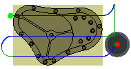

<div id="useChipThinning"><p>有効にすると、工具の切削部が回転し、切削エッジの先端負荷が軽減します。</p>
<table class="tipTable" cellspacing="10">
<tr>
<td><center></center></td>
<td><center></center></td>
</tr><tr>
<td><center><p><b>無効</b></p></center></td>
<td><center><p><b>有効</b></p></center></td>
</tr></table>
</div>